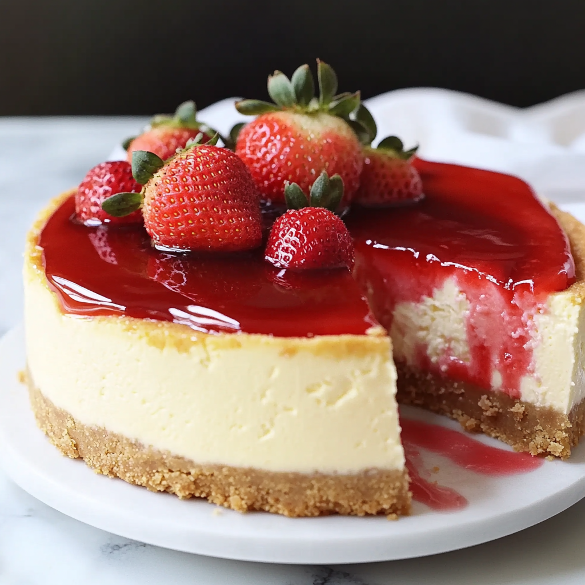

¡Bienvenidos a nuestra receta!

El pastel de chocolate es uno de los postres más populares y deliciosos. Se caracteriza por su textura suave, esponjosa y su intenso sabor a chocolate.
Es ideal para compartir en familia, celebrar ocasiones especiales o disfrutar de un momento dulce. En esta receta aprenderemos a preparar un delicioso pastel de chocolate de manera sencilla.
Tiempo de preparación
45 minutos
Porciones
8 personas
Ingredientes
Para preparar nuestro delicioso pastel de chocolate necesitaremos los siguientes ingredientes:
- 2 tazas de harina de trigo
- 1 taza de azúcar
- 1/2 taza de cacao en polvo
- 2 huevos
- 1 taza de leche
- 100 gramos de mantequilla
- 1 cucharadita de polvo de hornear
Preparación
Sigue estos sencillos pasos para preparar un delicioso pastel de chocolate casero.
- Precalienta el horno a 180 °C y engrasa un molde para pastel con un poco de mantequilla.
- En un recipiente mezcla la harina, el azúcar, el cacao en polvo y el polvo de hornear.
- En otro recipiente bate los huevos, agrega la leche y la mantequilla derretida.
- Incorpora poco a poco los ingredientes líquidos a los ingredientes secos.
- Mezcla hasta conseguir una masa uniforme, sin grumos.
- Vierte la mezcla en el molde previamente engrasado.
- Hornea durante aproximadamente 30 a 35 minutos, hasta que al introducir un palillo salga limpio.
- Retira del horno, deja enfriar y desmolda cuidadosamente.